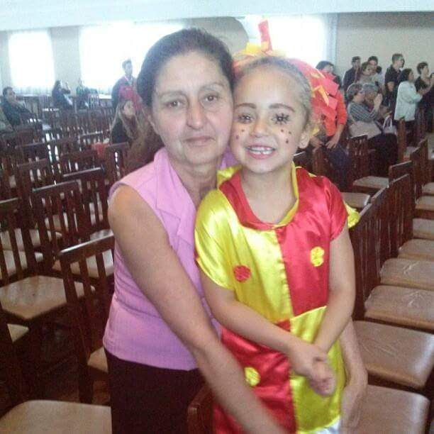
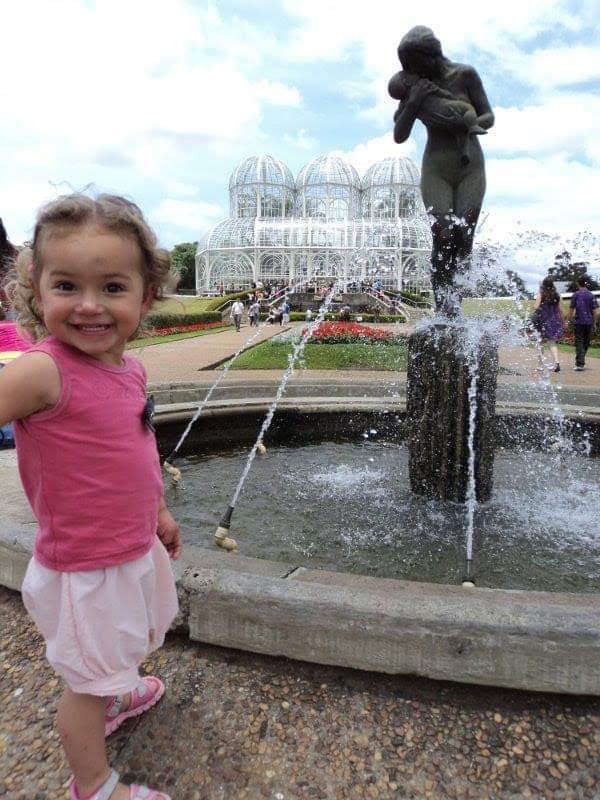

Emanuelle
Estudante
Sobre Mim
Tenho 17 anos e sou uma adolescente, estudante dedicada e estou atualmente no 2º ano do Ensino Médio, cursando concomitantemente o Técnico Integrado em Desenvolvimento de Sistemas. Visualmente, tenho a pele clara e olhos castanhos expressivos. Meu cabelo é minha marca registrada: uma cascata de cachos com a raiz mais escura que transiciona para pontas loiras vibrantes, o que me dá um visual cheio de personalidade e movimento. No trato social, sou extremamente animada, carinhosa e, na maioria das vezes, estou com um sorriso contagiante que ilumina o ambiente. Meu afeto é genuíno e me considero uma amiga leal e uma pessoa acolhedora. Contudo, admito que sou um tanto teimosa ao defender minhas convicções e, em momentos de pressão, posso ficar um pouco estressada. Curiosamente, as pessoas que me conhecem dizem que sou muito parecida com a minha mãe, o que me faz sentir que carrego uma força familiar na minha personalidade marcante.
Minha Personalidade
Sou uma pessoa criativa, apaixonada por aprender coisas novas e sempre em busca de desafios. Gosto de me conectar com pessoas e compartilhar experiências. Valorizo a autenticidade e acredito que cada dia é uma oportunidade para crescer e evoluir.
Meus Interesses
Meus interesses se dividem em dois grandes caminhos: a busca por uma excelência profissional e a construção de uma vida pessoal plena. Sonhos de Carreira e Formação: Meu foco principal no futuro é me formar na faculdade dos sonhos. Eu me vejo seguindo a área de Medicina ou me aprofundando no setor de Refinaria, Gás e Petróleo. Em qualquer uma das escolhas, meu grande objetivo é me tornar uma especialista na minha área de atuação futura, dedicando-me ao máximo para alcançar o sucesso e fazer a diferença. Vida Pessoal e Família: Um dos meus maiores sonhos é construir minha própria família. Eu me visualizo casada e, principalmente, realizando o sonho de ser mãe. Meu desejo inicial é ter um casal de filhos, criando um ambiente carinhoso e feliz. Paixões e Novas Descobertas: Além da área profissional e familiar, nutro uma grande paixão por artes. Como continuação de um sonho, gostaria muito de voltar a fazer aulas de música, com foco especial no violino. A música é uma forma de expressar minha intensidade. Tenho também um interesse enorme por conhecer lugares novos, culturas e pessoas. Adoro a ideia de viajar e descobrir o mundo, começando por explorar diversos pontos turísticos aqui do Brasil. Cada viagem é uma oportunidade de aprendizado e de colecionar novas experiências.
Galeria de Fotos
Aqui estão alguns momentos especiais:

